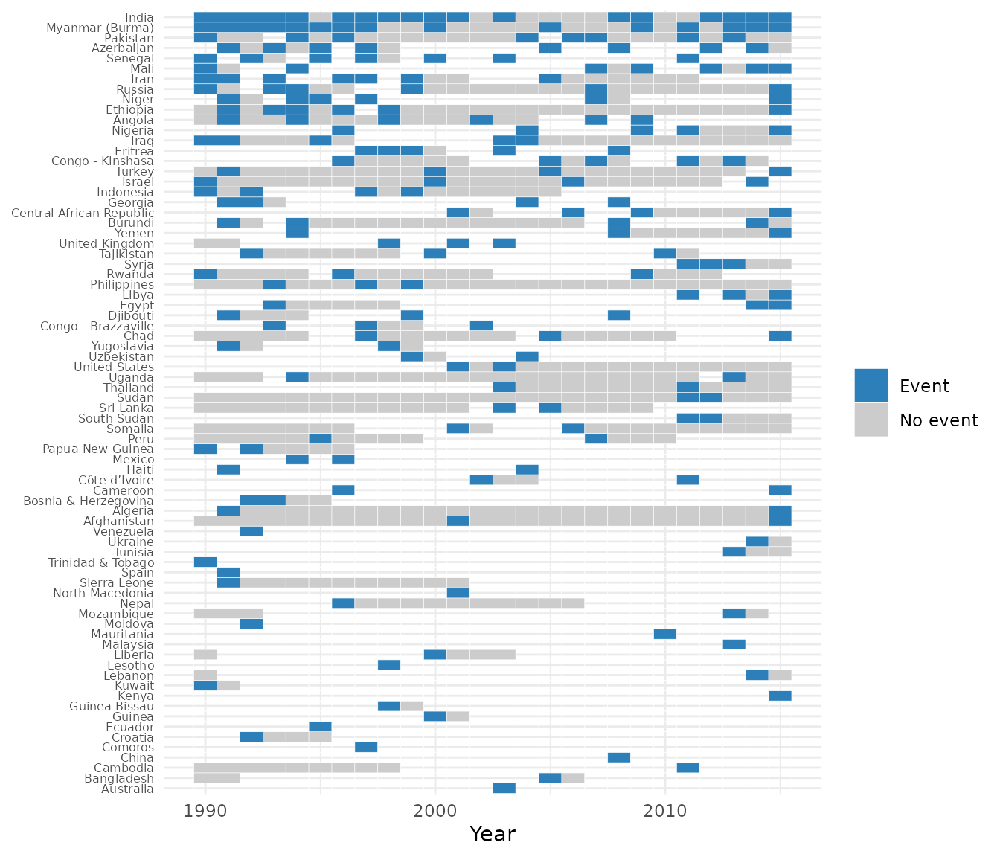

contentiousR creates reproducible country-year panels
for contentious politics and civil conflict research, offers diagnostics
and visualization tools, and allows interoperation with
peacesciencer.
Build a panel and add data
First, load a package. Then, create a state panel with the selected temporal coverage and coutnry coding system. Use a pipeline workflow to add data, such as economic and conflict vaiables.
library(contentiousR)
panel <- build_states_panel(
start_year = 2000,
end_year = 2002,
coding_system = "cow"
)
analysis_data <- panel |>
add_gdp() |>
add_conflict("ucdp_prio") |>
add_leader_data("archigos")
analysis_data[1:4, c(
"country", "year", "gdp_pcap", "ucdp_prio_incidence", "leader"
)]
#> country year gdp_pcap ucdp_prio_incidence leader
#> 1 United States 2000 55889.52 NA Clinton
#> 2 United States 2001 55783.75 1 G.W. Bush
#> 3 United States 2002 56127.44 1 G.W. Bush
#> 4 Canada 2000 48531.95 NA ChretienIf there is an unmatched row, R returns NA
Standalone workflow
If you want to inspect data before proceeding to further steps, standalone workflow can be helpful, as it loads data and saves it withint R environment.
conflicts <- conflict_data(
start_year = 2000,
end_year = 2002,
dataset = "ucdp_prio",
coding_system = "gw"
)
head(conflicts)
#> # A tibble: 6 × 13
#> gw year ucdp_prio_incidence ucdp_prio_onset ucdp_prio_n_conflicts
#> <int> <dbl> <int> <int> <int>
#> 1 2 2001 1 1 2
#> 2 2 2002 1 0 1
#> 3 100 2000 1 0 1
#> 4 100 2001 1 0 1
#> 5 100 2002 1 0 1
#> 6 200 2001 1 1 1
#> # ℹ 8 more variables: ucdp_prio_intensity_max <int>, ucdp_prio_war <int>,
#> # ucdp_prio_cumulative_intensity <int>, ucdp_prio_type_max <int>,
#> # ucdp_prio_intrastate <int>, ucdp_prio_interstate <int>,
#> # ucdp_prio_incompatibility_max <int>, ucdp_prio_ep_end <int>See vignette("data-sources", package = "contentiousR")
before interpreting any source-specific variable.
Conflict spells (peace-years)
add_spell_duration() helps one add peace spells,
i.e. years since the last event for that state. This tool can be useful
as a control for temporal dependence (e.g. with cubic splines). It needs
a column without NA, so filter first:
spell_data <- build_states_panel(1990, 2005, coding_system = "gw") |>
add_conflict("ucdp_prio") |>
tidyr::drop_na(ucdp_prio_onset) |>
add_spell_duration(event = "ucdp_prio_onset")
spell_data[spell_data$gw == 2, c("gw", "year", "ucdp_prio_onset", "ucdp_prio_spell")]
#> gw year ucdp_prio_onset ucdp_prio_spell
#> 1 2 2001 1 0
#> 2 2 2002 0 0
#> 3 2 2003 1 1
#> 4 2 2004 0 0
#> 5 2 2005 0 1To work, the function needs an event; if it is omitted,
add_spell_duration() looks for exactly one column ending in
_onset, _incidence, or _ongoing
and uses that; but it errors if none or several are found.
Lagged variables
add_lag() adds a lagged version of one or more columns,
computed within each state after sorting by year and grouping by state
before lagging. Unlike a plain dplyr::lag(), it also checks that the
previous row really is the previous year. If a year is missing, say a
country has data for 2002 and 2005 but nothing in between, the lag for
2005 is set to NA.
build_states_panel(1990, 1995, coding_system = "cow") |>
add_gdp() |>
add_lag(vars = c("gdp_pcap", "gdp_growth"), n = 1) |>
dplyr::filter(cow == 2) |>
dplyr::select(cow, year, gdp_pcap, gdp_pcap_l, gdp_growth_l)
#> # A tibble: 6 × 5
#> cow year gdp_pcap gdp_pcap_l gdp_growth_l
#> <dbl> <dbl> <dbl> <dbl> <dbl>
#> 1 2 1990 45755. NA NA
#> 2 2 1991 45035. 45755. 3.18
#> 3 2 1992 45912. 45035. -1.58
#> 4 2 1993 46485. 45912. 1.95
#> 5 2 1994 47696. 46485. 1.25
#> 6 2 1995 48326. 47696. 2.60Each requested variable gets one new column named
<var>_l.
Visualizing onsets
Use plot_coverage to visualize the treatment status
across the panel data. 1s are shaded as an event,
0s as no event, and years where the source has no data —
are left blank. States that never have the event are dropped by default
(drop_empty = TRUE)
if (requireNamespace("ggplot2", quietly = TRUE)) {
build_states_panel(1990, 2015, coding_system = "cow") |>
add_conflict("ucdp_prio") |>
plot_coverage("ucdp_prio_onset")
}
Quarterly, monthly, and daily panels
Set unit = "quarter", "month", or
"day" to build a panel at a finer unit.
add_conflict() places each event in the period it started,
annual data such as GDP repeat across the months of a year, and leaders
change in the month they took office. With
fill_zero = TRUE, months the dataset covers but in which it
records nothing get 0 instead of NA:
monthly <- build_states_panel(2011, 2011, coding_system = "cow", unit = "month") |>
add_gdp() |>
add_leader_data() |>
add_conflict("navco3.0", fill_zero = TRUE)
monthly |>
dplyr::filter(cow == 651) |>
dplyr::select(cow, year, month, gdp_pcap, leader, nvc3.0_n_campaign_events) |>
head(4)
#> cow year month gdp_pcap leader nvc3.0_n_campaign_events
#> 1 651 2011 1 13082.43 Mubarak 92
#> 2 651 2011 2 13082.43 Tantawi 121
#> 3 651 2011 3 13082.43 Tantawi 19
#> 4 651 2011 4 13082.43 Tantawi 21Only datasets that record exact start dates can be used at these
units; see the data-source guide for
which ones, how records with imprecise dates are handled, and how
coverage is defined for fill_zero.
aggregate_panel() collapses a finer panel back to quarters
or years, and list_datasets() lists every dataset with its
coverage and supported units.
Working with V-Dem data
To work with the V-Dem data, download it from its official repository, then use only the indicators you need:
remotes::install_github("vdeminstitute/vdemdata")
panel |>
add_vdem(c("v2x_polyarchy", "v2x_libdem"))To get started, I will provide a detailed description on two
functions: load_gdp_data() / add_gdp() and
load_population_data() / add_population(). For
all other functions, see the Reference
page, which documents every function in the package.
load_gdp_data() / add_gdp()
Two GDP sources are currently supported and maintained:
"gapminder" and "fariss".
"gapminder" (default) returns gdp_pcap,
log_gdp_pcap, and gdp_growth.
"fariss" returns the latent GDP and GDP per capita
estimates from Fariss, Anders, Markowitz, and Barnum (2022)
# Standalone
gdp <- load_gdp_data(start_year = 1990, end_year = 2015, coding_system = "cow")
fariss_gdp <- load_gdp_data(1700, 2015, dataset = "fariss", coding_system = "cow")
# Pipeline
panel |> add_gdp()
panel |> add_gdp(dataset = "fariss")
load_population_data() /
add_population()
Three population sources are available via dataset.
| Dataset | Source | Coverage | Returned columns |
|---|---|---|---|
"wpp" (default) |
UN World Population Prospects 2024 | 1949–2023 | wpp_pop |
"nmc" |
Correlates of War NMC v7.0 (Singer et al. 1972; Singer 1988) | 1816–2022 |
nmc_tpop, nmc_upop
|
"fariss" |
Fariss et al. (2022) latent estimate | 1500–2019 | fariss_pop |
# Standalone
pop_wpp <- load_population_data(1990, 2015, dataset = "wpp", coding_system = "cow")
pop_nmc <- load_population_data(1900, 2015, dataset = "nmc", coding_system = "cow")
# Pipeline
panel |> add_population()
panel |> add_population(dataset = "nmc")Interoperate with peacesciencer
contentiousR supports peacesciencer (see
Miller 2022). It means you can add data from peacesciencer
within the same data construction pipeline.
Functions such as peacesciencer::add_archigos() expect
ccode/gwcode keys plus attributes that
describe the state system and unit of analysis. Use
add_from_peacesciencer() to return a panel with only
contentiousR’s original country-code key:
library(peacesciencer)
analysis_data |>
add_from_peacesciencer(peacesciencer::add_archigos)For multiple additions, call as_peacesciencer_panel()
once and then apply the peacesciencer functions
directly.
References
Fariss, C. J., Anders, T., Markowitz, J. N., & Barnum, M. (2022). New estimates of over 500 years of historic GDP and population data. Journal of Conflict Resolution, 66(3), 553-591. https://doi.org/10.1177/00220027211054432
Miller, S. V. (2022). {peacesciencer}: An R package for quantitative peace science research. Conflict Management and Peace Science, 39(6), 755-779. https://doi.org/10.1177/07388942221077926
Singer, J. D. (1988). Reconstructing the Correlates of War dataset on material capabilities of states, 1816-1985. International Interactions, 14(2), 115-132. https://doi.org/10.1080/03050628808434695
Singer, J. D., Bremer, S., & Stuckey, J. (1972). Capability distribution, uncertainty, and major power war, 1820-1965. In B. Russett (Ed.), Peace, war, and numbers (pp. 19-48). Sage.